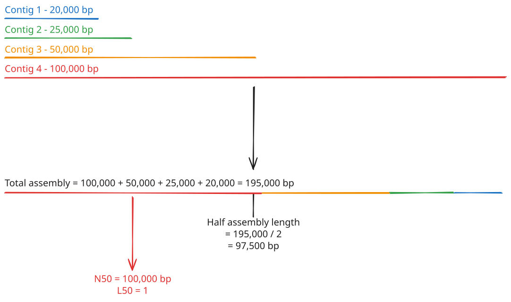
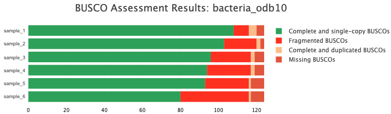
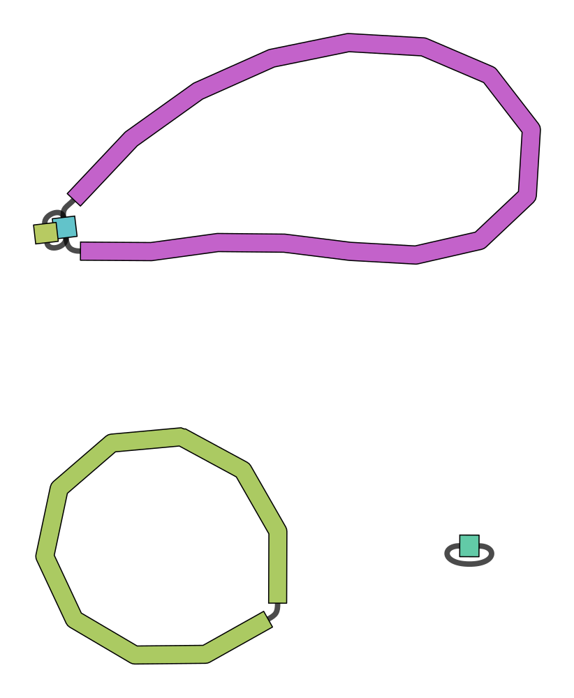

Lesson 7 - Assembly quality control
Learning objectives
- Explain the meaning of de novo assembly quality control metrics, including N50 and L50
- Assess the quality of a de novo bacterial genome assembly
7.1 Basics of assembly QC
Once we have generated an assembly, we want to be able to assess its quality. Importantly, we want to know how complete the assembly is and how confident the assembler was in the overall structure of the genome.
There are several metrics and tools available for assessing the quality of a de novo genome assembly. Two very common are the N50 and L50 statistics. The N50 of an assembly is defined as the length of the shortest contig that, along with all other contigs of equal or longer length, make up 50% of the total assembly length. Put another way, 50% of the total assembly is contained in contigs with lengths equal to or longer than N50. This is a simple, at-a-glance metric that can give you a quick idea of the completeness or fragmentation of your assembly. A large N50 (relative to the total assembly length) means the majority of your assembly is contained within large contigs; a small N50 means the assembly is fragmented into smaller contigs. In the context of bacterial genomics, we would expect the N50 to be very large; most of the assembly should be contained within a single contig - the main chromosome. A small N50 would suggest that the assembler failed to construct the main chromosome in its entirety, likely due to low coverage.
Another metric related to N50 is L50. Somewhat confusingly, the L50 is defined as the smallest number of contigs whose length makes up 50% of the total assembly length. A small L50 means the assembly is made up of a small number of long contigs; a large L50 means there are lots of smaller contigs and possibly indicates fragmentation of the assembly. Again, in the context of bacterial genomics, we expect to see a single large chromosome making up the vast majority of the genome, so the L50 should be low for a high quality assembly.

N50 and L50 are confusingly named
The N50 and L50 statistics are confusingly named and it's easy to mix them up. Remember that:
- N50 refers to the length of a contig
- L50 refers to a number of contigs
The reason for this strange nomenclature seems to stem from N50 originally being called the "N50 length" - that is, the length of the Nth-largest contig that makes up 50% of the genome.
There are other similarly-defined metrics such as N90 and L90, which look at the length and number of contigs making up 90% of the genome, respectively. Together, these numbers can help you quickly get a sense of how complete or fragmented your genome assembly is.
A more empirical method for determining assembly quality is called BUSCO: Benchmarking Universal Single-Copy Orthologues. Universal single-copy orthologues are genes that are highly conserved across species and are typically only present as a single copy in the genome. Because of their ubiquity and consistent copy number across organisms, they work nicely as a benchmark for whether a genome assembly is complete or not. A complete genome assembly would be expected to have a high number of BUSCO genes present as a single copy. On the other hand, an incomplete or fragmented assembly would be expected to be missing more BUSCO genes. Furthermore, a poorly-assembled genome may contain erroneous duplicates of some regions, leading to multiple copies of BUSCO genes that should only be present as a single copy. As such, the rules of thumb for a high-quality assembly are:
- High fraction of single-copy BUSCO genes
- Low fraction of multiple-copy BUSCO genes
- Low fraction of missing BUSCO genes
It is important to remember that BUSCO only looks at a small proportion of the total assembly, and so a good BUSCO score alone can't be used to infer a high-quality assembly. However, a poor BUSCO score does strongly indicate a poor-quality assembly.
Finally, visualising a genome assembly is extremely useful for assessing its quality. Remember from Lesson 5 that the GFA file contains a graph of your assembly - a list of sequence fragments and how they connect to each other. High-quality contigs will resemble linear or circular chains of sequences with no branching. Branching graphs indicate lack of confidence in the true genome structure, likely due to low coverage or poor-quality reads. For bacteria, a high-quality genome will show one large, circular contig and possibly one or more smaller, circular contigs, with no branching and no linear sequences.
7.2 Tools for assessing de novo assembly quality
There are several tools available for assessing assembly QC. We will introduce three specific tools which cover the range of metrics described above. These are:
- QUAST - a tool for generating various assembly statistics
- BUSCO - generates BUSCO scores for an assembly
- Bandage - visualisation tool for inspecting assembly graphs
7.2.1 QUAST
QUAST is a general-purpose tool that can generate several statistics for an assembly. These include the N50 and L50 metrics described above, as well as total assembly length and contig count. The only required input is the assembly FASTA file:
quast \
/path/to/assembly.fasta \
--labels "assembly_name" \
--output-dir /path/to/output/qc/results \
--threads <int>
The tool will output the results in a variety of formats, including TSV (one sample per column), transposed TSV (one sample per line), and HTML, for your convenience. A typical report will look like:
Assembly assembly_name
# contigs (>= 0 bp) 3
# contigs (>= 1000 bp) 3
# contigs (>= 5000 bp) 3
# contigs (>= 10000 bp) 3
# contigs (>= 25000 bp) 3
# contigs (>= 50000 bp) 2
Total length (>= 0 bp) 6527792
Total length (>= 1000 bp) 6527792
Total length (>= 5000 bp) 6527792
Total length (>= 10000 bp) 6527792
Total length (>= 25000 bp) 6527792
Total length (>= 50000 bp) 6501077
# contigs 3
Largest contig 6194090
Total length 6527792
GC (%) 61.56
N50 6194090
N90 6194090
auN 5891993.1
L50 1
L90 1
# N's per 100 kbp 0.00
7.2.2 BUSCO
BUSCO is the name of the tool that generates BUSCO scores. It relies on two inputs: your assembly and a database. The databases draw from OrthoDB - a database of orthologous protein-coding genes. Databases exist for lineages at different taxonomic levels, including the kingdom, phylum, class, etc. For example, for bacteria, there is a kingdom-level bacterial lineage database, as well as phylum-level databases (e.g. Cyanobacteria), class-level databases (e.g. Actinobacteria), and order-level databases (e.g. Mycoplasmatales).
A typical BUSCO run command looks like:
busco \
--in /path/to/assembly.fasta \
--lineage_dataset /path/to/orthodb/database \
--out /path/to/output/busco/results \
--mode genome \
--offline \
--cpu <int>
The --offline flag tells BUSCO to not download anything and rely completely on the database provided.
BUSCO will generate a table of all of the genes it did and didn't find, as well as a helpful short summary that looks like:
# BUSCO version is: 6.1.0
# The lineage dataset is: bacteria_odb12.2 (Creation date: 2026-05-22, number of genomes: 3130, number of BUSCOs: 116)
# Summarized benchmarking in BUSCO notation for file /path/to/assembly.fasta
# BUSCO was run in mode: prok_genome_prod
# Gene predictor used: prodigal
***** Results: *****
C:92.2%[S:92.2%,D:0.0%],F:5.2%,M:2.6%,n:116
107 Complete BUSCOs (C)
107 Complete and single-copy BUSCOs (S)
0 Complete and duplicated BUSCOs (D)
6 Fragmented BUSCOs (F)
3 Missing BUSCOs (M)
116 Total BUSCO groups searched
Assembly Statistics:
3 Number of scaffolds
3 Number of contigs
6527792 Total length
0.000% Percent gaps
6 Mbp Scaffold N50
6 Mbp Contigs N50
Dependencies and versions:
hmmsearch: 3.4
bbtools: None
prodigal: 2.6.3
The most important part here is the results section with the list of:
- Complete and single-copy BUSCOs
- This number should be as high as possible
- Complete and duplicated BUSCOs
- These could indicate erroneous duplication of sections of the genome
- Fragmented BUSCOs
- These could indicate incomplete assembly of sections of the genome due to low coverage
- Missing BUSCOs
- These could also indicate incomplete assembly of sections of the genome
Tools like MultiQC will also compile these results from multiple samples into a helpful bar plot:

7.2.3 Bandage
Unlike QUAST and BUSCO, Bandage doesn't generate any statistics related to your assembly. Instead, it is a visualisation tool, which takes the GFA assembly graph file and creates a human-friendly image showing the overall structure of your assembly. This is a great way to quickly inspect your assembly for any obvious structural issues. The only input is the GFA file generated by the assembler:
Two things to keep in mind:
- The input must be the GFA file, not the FASTA file. The GFA file contains all of the additional information about how the assembly fragments connect with one another.
- The output is an SVG image file. This is a special type of vector image format. Most web browsers should be able to load the image, as well as some regular image viewer apps.

7.3 Exercises
In this exercise, you will run QUAST, BUSCO, and Bandage on the assembly you put together at the end of the Lesson 6 exercise (your flye chromosome plus any additional plasmids recovered by plassembler), and use each tool's output to judge how complete and reliable that assembly is.
7.3.1 Run QUAST
Run QUAST on your assembly FASTA file. Place the output in a new directory called quast, and use 4 CPU threads.
Solution
Remember to substitute your sample name for sampleXX.
Once QUAST has finished, look at the human-readable report:
7.3.1.1 Questions
- What was the N50 and L50 for your assembly? Does this indicate a good or bad quality assembly?
- What was your longest contig?
- What was the total assembly length?
Discussion points
- For a single bacterial isolate, a high-quality assembly should have an N50 close to the length of the whole chromosome, and an L50 of 1 - i.e. a single contig accounts for at least half the genome.
- A low N50 or high L50 suggests the assembly is fragmented into many smaller pieces, which could point to insufficient coverage, low-quality reads, or a genuinely complex genomic region that the assembler couldn't resolve.
- Compare the total assembly length against the expected genome size for your species (e.g. via the species identification you performed in Lesson 4). A total length much larger than expected can indicate uncollapsed repeats or contaminating sequence; a length much smaller can indicate missing or unassembled regions.
7.3.2 Run BUSCO
Run BUSCO on your assembly FASTA file using the pre-downloaded bacterial lineage database located at ~/data/ref/busco/bacteria_odb12. Place the output in a new directory called busco, and use 4 CPU threads.
Solution
Once BUSCO has finished, look at the short summary:
7.3.2.1 Questions
- How many complete & single-copy BUSCOs were found?
- How many BUSCOs were duplicated?
- How many BUSCOs were fragmented or missing?
- How would you interpret this result? Was it a good assembly or a bad one?
Discussion points
- A high fraction of complete, single-copy BUSCOs is the signature of a complete, well-resolved assembly.
- Duplicated BUSCOs can indicate that a region of the genome (e.g. a repeat, or a plasmid also partially captured in the chromosome contig) has been erroneously assembled more than once.
- Fragmented or missing BUSCOs can indicate incomplete assembly of parts of the genome, often due to low coverage in those regions.
- Remember that BUSCO only surveys a small, conserved fraction of the genome. A good BUSCO score is reassuring but doesn't guarantee a perfect assembly overall; a poor score, however, is a strong signal of a problem.
7.3.3 Run Bandage
Visualise your assembly graph(s) with Bandage. Start with the flye assembly graph from Lesson 5:
Solution
If plassembler recovered any additional plasmids that weren't already present in the flye graph, also visualise their graph:
Open the resulting SVG file(s) in a web browser or image viewer and describe your assembly:
- Did you find mostly circular or linear contigs?
- Did you find a single large chromosome?
- Did you find many small plasmids?
Discussion points
- A high-quality bacterial assembly should show a single large, circular contig for the chromosome, with no unresolved branching.
- Any plasmids should also appear as separate, circular contigs, typically much smaller than the chromosome.
- Branching or tangled sections of the graph indicate regions the assembler wasn't confident about, often due to repeats, low coverage, or noisy reads. Cross-check any contig you're unsure about against the QUAST and BUSCO results above.
Taken together, your QUAST, BUSCO, and Bandage results should give you a rounded picture of your assembly's quality: how complete it is, how confident the assembler was in its structure, and whether there are any specific regions worth further scrutiny. If any of these tools flagged problems, keep them in mind as we move on to polishing the assembly in the next lesson.